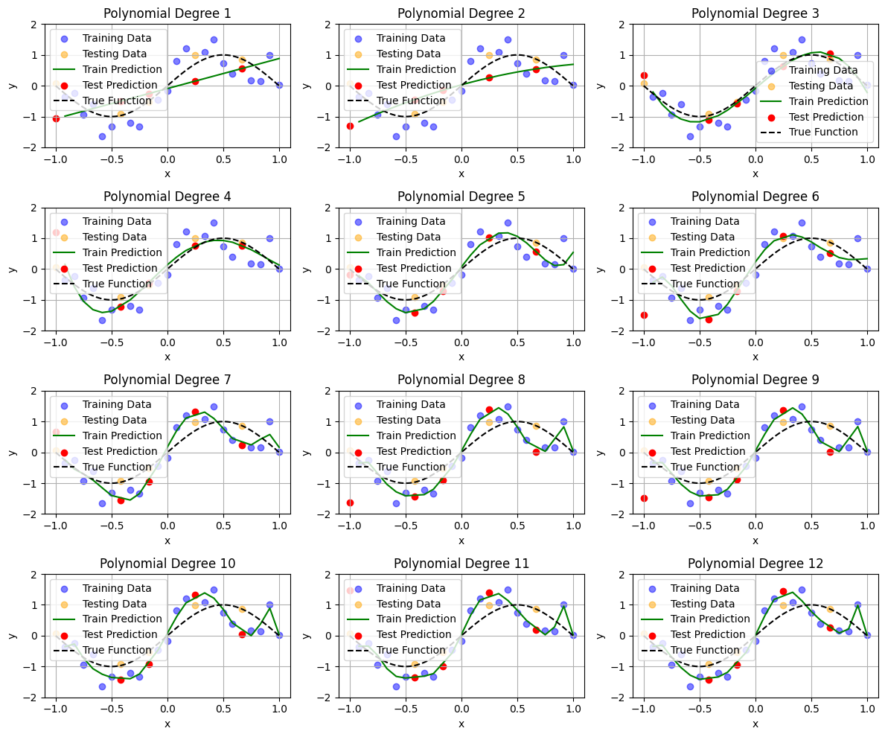

Bias-Variance Tradeoff#
Mahmood Amintoosi, Fall 2024
Computer Science Dept, Ferdowsi University of Mashhad
Further Reading
Paper: Reconciling modern machine-learning practice and the classical bias–variance trade-off
Paper: Understanding the double descent curve in Machine Learning
import numpy as np
from numpy import polyfit
from numpy import polyval
import matplotlib.pyplot as plt
from collections import defaultdict
def f(x):
return np.sin(x * np.pi)
def error_function(pred, actual):
return (pred - actual) ** 2
np.random.seed(120)
n_observations_per_dataset = 25
n_datasets = 1000
max_poly_degree = 12 # Maximum model complexity
model_poly_degrees = range(1, max_poly_degree + 1)
NOISE_STD = .5
percent_train = .8
n_train = int(np.ceil(n_observations_per_dataset * percent_train))
x = np.linspace(-1, 1, n_observations_per_dataset)
x = np.random.permutation(x)
x_train = x[:n_train]
x_test = x[n_train:]
theta_hat = defaultdict(list)
pred_train = defaultdict(list)
pred_test = defaultdict(list)
train_errors = defaultdict(list)
test_errors = defaultdict(list)
for dataset in range(n_datasets):
# Simulate training/testing targets
y_train = f(x_train) + NOISE_STD * np.random.randn(*x_train.shape)
y_test = f(x_test) + NOISE_STD * np.random.randn(*x_test.shape)
# Loop over model complexities
for degree in model_poly_degrees:
# Train model
tmp_theta_hat = polyfit(x_train, y_train, degree)
# Make predictions on train set
tmp_pred_train = polyval(tmp_theta_hat, x_train)
pred_train[degree].append(tmp_pred_train)
# Test predictions
tmp_pred_test = polyval(tmp_theta_hat, x_test)
pred_test[degree].append(tmp_pred_test)
# Mean Squared Error for train and test sets
train_errors[degree].append(np.mean(error_function(tmp_pred_train, y_train)))
test_errors[degree].append(np.mean(error_function(tmp_pred_test, y_test)))
# Visualization
plt.figure(figsize=(12, 10))
# Loop through each model complexity for visualization
for degree in model_poly_degrees:
plt.subplot(4, 3, model_poly_degrees.index(degree) + 1)
# Plot training data
plt.scatter(x_train, y_train, color='blue', label='Training Data', alpha=0.5)
plt.scatter(x_test, y_test, color='orange', label='Testing Data', alpha=0.5)
# Plot predictions for the last dataset
# Sort the data for plotting
sorted_indices_train = np.argsort(x_train)
# Plot predictions for the last dataset using sorted data
plt.plot(x_train[sorted_indices_train], pred_train[degree][-1][sorted_indices_train], label='Train Prediction', color='green')
plt.scatter(x_test, pred_test[degree][-1], label='Test Prediction', color='red')
# Plot the true function
x_fine = np.linspace(-1, 1, 100)
plt.plot(x_fine, f(x_fine), 'k--', label='True Function')
plt.title(f'Polynomial Degree {degree}')
plt.xlabel('x')
plt.ylabel('y')
plt.ylim([-2, 2])
plt.legend()
plt.grid()
plt.tight_layout()
plt.show()

def calculate_estimator_bias_squared(pred_test):
pred_test = np.array(pred_test)
average_model_prediction = pred_test.mean(0)
return np.mean((average_model_prediction - f(x_test)) ** 2)
def calculate_estimator_variance(pred_test):
pred_test = np.array(pred_test)
average_model_prediction = pred_test.mean(0)
return np.mean((pred_test - average_model_prediction) ** 2)
complexity_train_error = []
complexity_test_error = []
bias_squared = []
variance = []
for degree in model_poly_degrees:
complexity_train_error.append(np.mean(train_errors[degree]))
complexity_test_error.append(np.mean(test_errors[degree]))
bias_squared.append(calculate_estimator_bias_squared(pred_test[degree]))
variance.append(calculate_estimator_variance(pred_test[degree]))
best_model_degree = model_poly_degrees[np.argmin(complexity_test_error)]
plt.figure(figsize=(5, 3))
plt.plot(model_poly_degrees, bias_squared, color='blue', label='$bias^2$', linewidth=5)
plt.plot(model_poly_degrees, variance, color='green', label='variance', linewidth=5)
plt.plot(model_poly_degrees, np.array(bias_squared) + np.array(variance), linewidth=3, color='black', label='Total Error')
plt.axvline(best_model_degree, color='black', linestyle='--', linewidth=2, label=f'Optimal Model Complexity (Degree={best_model_degree})')
plt.xlabel('Model Complexity (Polynomial Degree)')
plt.ylabel('Error')
plt.ylim([0, .25])
plt.xlim([2, 6])
plt.legend()
plt.title('Bias-Variance Tradeoff')
Text(0.5, 1.0, 'Bias-Variance Tradeoff')
Show code cell content
# # https://spotintelligence.com/2023/04/11/bias-variance-trade-off/
# from sklearn.model_selection import train_test_split
# from sklearn.preprocessing import PolynomialFeatures
# from sklearn.linear_model import LinearRegression
# from sklearn.metrics import mean_squared_error
# import matplotlib.pyplot as plt
# import numpy as np
# # Generate some synthetic data with a non-linear relationship
# np.random.seed(0)
# x = np.linspace(-5, 5, num=100)
# # y = x ** 3 + np.random.normal(size=100)
# y = f(x) #np.sin(x * np.pi)
# # Split the data into training and testing sets
# x_train, x_test, y_train, y_test = train_test_split(x, y, test_size=0.2, random_state=0)
# # Fit polynomial regression models with different degrees of polynomials
# degrees = [1, 2, 3, 4, 5, 8, 10]
# train_errors, test_errors = [], []
# bias_squared = []
# variance = []
# for degree in degrees:
# # Transform the features to polynomial features
# poly_features = PolynomialFeatures(degree=degree)
# x_poly_train = poly_features.fit_transform(x_train.reshape(-1, 1))
# x_poly_test = poly_features.transform(x_test.reshape(-1, 1))
# # Fit the linear regression model to the polynomial features
# model = LinearRegression()
# model.fit(x_poly_train, y_train)
# # Evaluate the model on the training and testing data
# y_pred_train = model.predict(x_poly_train)
# y_pred_test = model.predict(x_poly_test)
# train_error = mean_squared_error(y_train, y_pred_train)
# test_error = mean_squared_error(y_test, y_pred_test)
# train_errors.append(train_error)
# test_errors.append(test_error)
# bias_squared.append(calculate_estimator_bias_squared(y_pred_test))
# variance.append(calculate_estimator_variance(y_pred_test))
# # Plot the training and testing errors as a function of the degree of polynomial
# plt.plot(degrees, train_errors, label='Training error')
# plt.plot(degrees, test_errors, label='Testing error')
# plt.plot(degrees, bias_squared, color='blue', label='$bias^2$', linewidth=5)
# plt.plot(degrees, variance, color='green', label='variance', linewidth=5)
# plt.legend()
# plt.xlabel('Degree of polynomial')
# plt.ylabel('Mean squared error')
# plt.show()